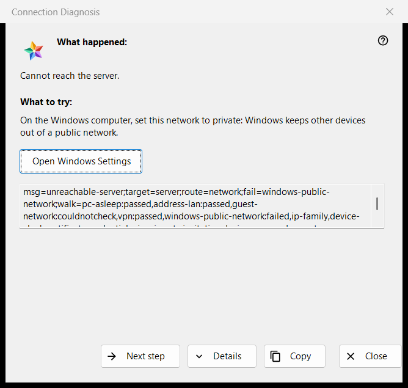

Connection Diagnosis
الغرض من هذه النافذة
يشرح لماذا يتعذّر الوصول إلى خادم أو جهاز، ويقترح ما يمكن تجربته، خطوة بعد خطوة. لا يغيّر أي إعداد في الكمبيوتر أو في Windows. يُفتح من الأمر Why doesn't it connect?.. في قائمة المزيد في قائمة الموارد (لصف محدد)، ومن إدخال خادم في أجهزتي يعيد تسجيل الدخول أو يعرض شهادة تغيّرت أو يتعذّر عليه الاتصال، ومن تلقاء نفسه عندما يفشل فتح مورد.


بهذا الترتيب
- اقرأ What happened.
- جرّب ما تقوله What to try.
- إذا لم يكن هذا هو السبب فاضغط Next step.
- اضغط Details إذا طلب أحدهم الرموز، وCopy لتسليمها.
- أغلق النافذة.
عناصر النافذة
What happened
جملة واحدة عن الفشل، مثل Cannot reach the server. أو The login or the password is wrong. أو This server does not look like the one you connected to before. وهي تتبع نوع الفشل الذي فتح النافذة.
What to try
تبدأ النافذة من أول خطوة فشلت في الفحص، أو من الخطوة الأولى إذا لم تفشل أي خطوة. الخطوات المعتادة: إيقاظ الجهاز الذي يشغّل الخادم؛ التأكد من أن الجهازين على الشبكة نفسها؛ مغادرة شبكة Wi-Fi الخاصة بالضيوف؛ إيقاف VPN لحظة؛ ضبط شبكة Windows على خاصة؛ فحص الخادم من شبكة أخرى؛ ضبط التاريخ والوقت الصحيحين؛ تأكيد بصمة جديدة؛ إعادة كتابة اسم المستخدم وكلمة المرور. وتقول الخطوة الأخيرة إن مشغّل الخادم وحده يستطيع الإصلاح.
Next step and Windows Settings
يتنقل Next step بين الخطوات ويختفي عند الأخيرة. وللخطوتين اللتين تستطيع إعدادات Windows إصلاحهما، ملف تعريف الشبكة والساعة، يفتح الزر Open Windows Settings صفحة Windows المناسبة؛ والبرنامج نفسه لا يغيّر شيئًا.
Details and Copy
يعرض Details أو يخفي مربعًا للقراءة فقط فيه رموز التشخيص: نوع الفشل والهدف والمسار والخطوة الفاشلة والخطوات التي قُطعت. لا يحتوي أبدًا على عنوان أو اسم مستخدم أو كلمة مرور أو بصمة. يضع Copy ذلك السطر في الحافظة وتقول النافذة: Diagnosis codes copied to clipboard.
كيف يعمل الفحص
يُجرى الفحص للاتصال الذي جرّبته فقط، ويقرأ فقط: يحاول الوصول إلى المضيف والمنفذ، وينظر في حالة الشبكة ومهايئات VPN وملف تعريف شبكة Windows ونوع العنوان والساعة والشهادة. يتوقف عند أول خطوة فاشلة، ولا يُحتسب فحص تعذّر إجراؤه ناجحًا ولا فاشلًا.